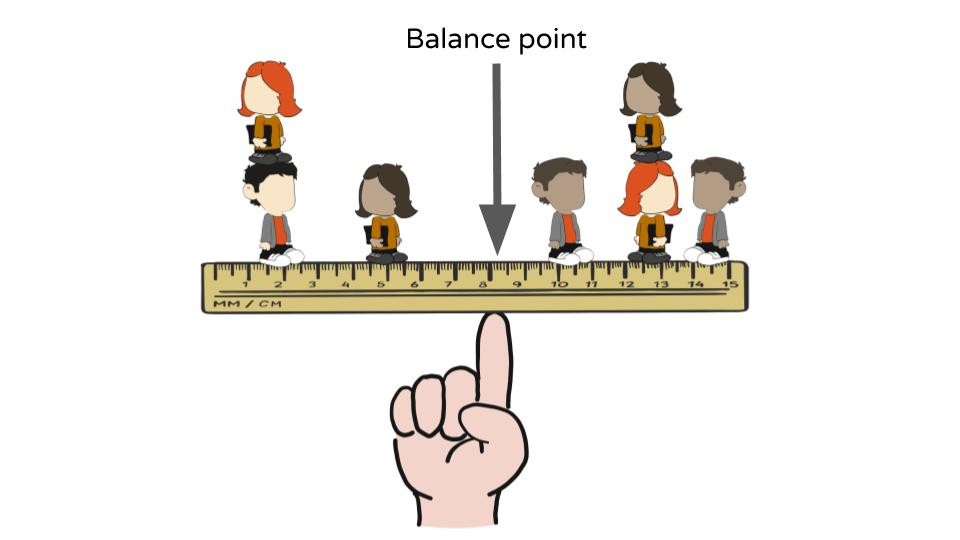

What's the Center
A measure of central tendency is a single value that attempts to describe a set of data by identifying the central position within that set of data. As such, measures of central tendency are sometimes called measures of central location. They are also classed as summary statistics. The mean (often called the average) is most likely the measure of central tendency that you are most familiar with, but there are others, such as the median and the mode.
The mean, median and mode are all valid measures of central tendency, but under different conditions, some measures of central tendency become more appropriate to use than others. In the following sections, we will look at the mean, mode and median, and learn how to calculate them and under what conditions they are most appropriate to be used.
The idea of looking at the center will become more clear as the semester unfolds. One reason is that the center of the data can be often though of as the expected value, that is the data value that is most likely to occur, or that should occur after repeated attempts at sampling.
As an inferential statistic we will use the idea of center most akin to "center of mass" as this is the balance point of our data, or that this is the value that holds the most weight and that we can be most sure of.
